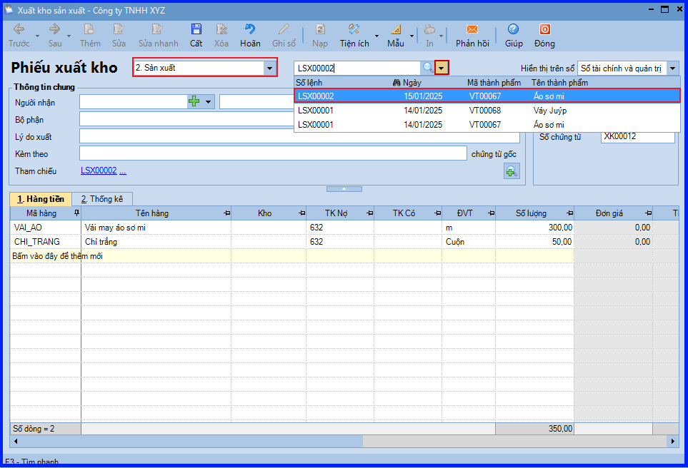
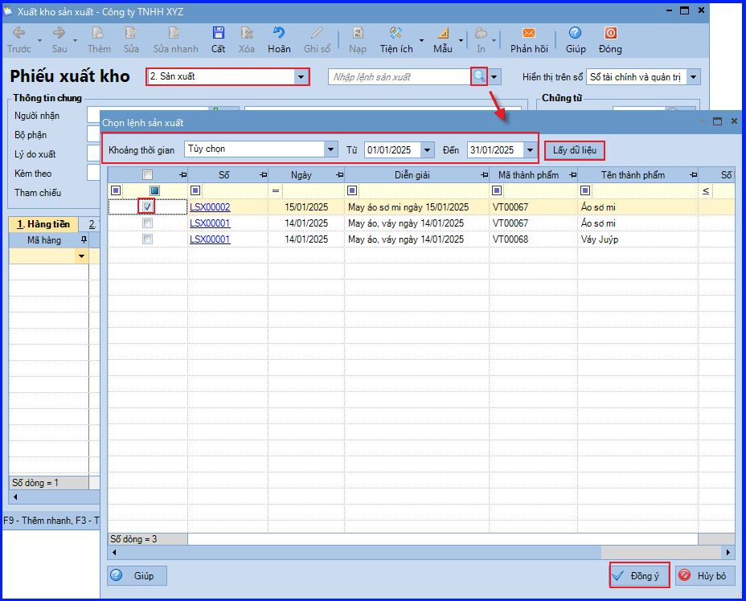
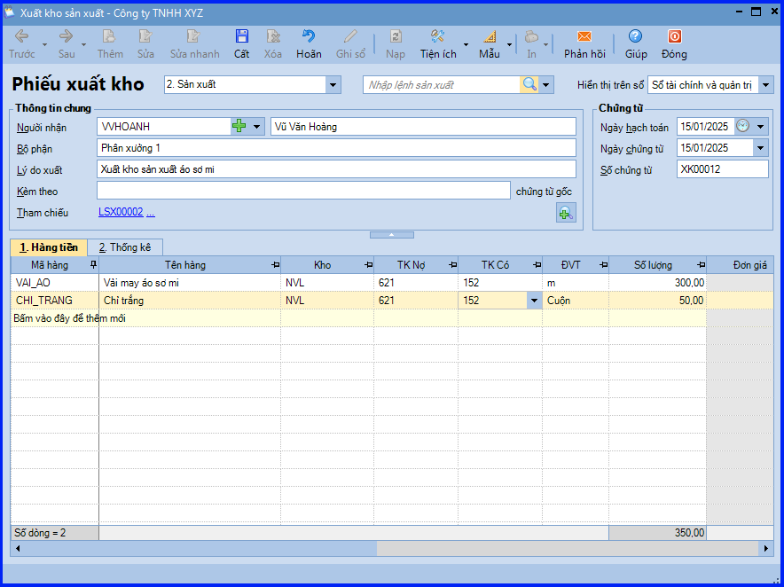
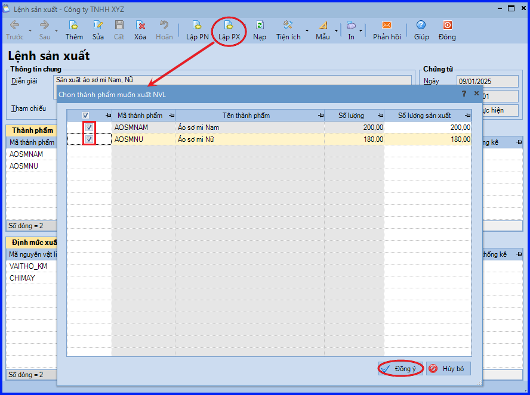
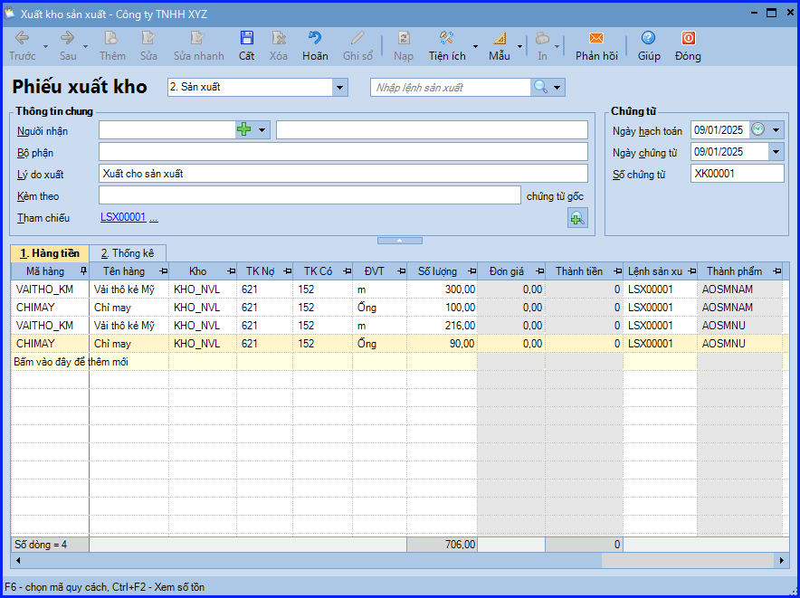
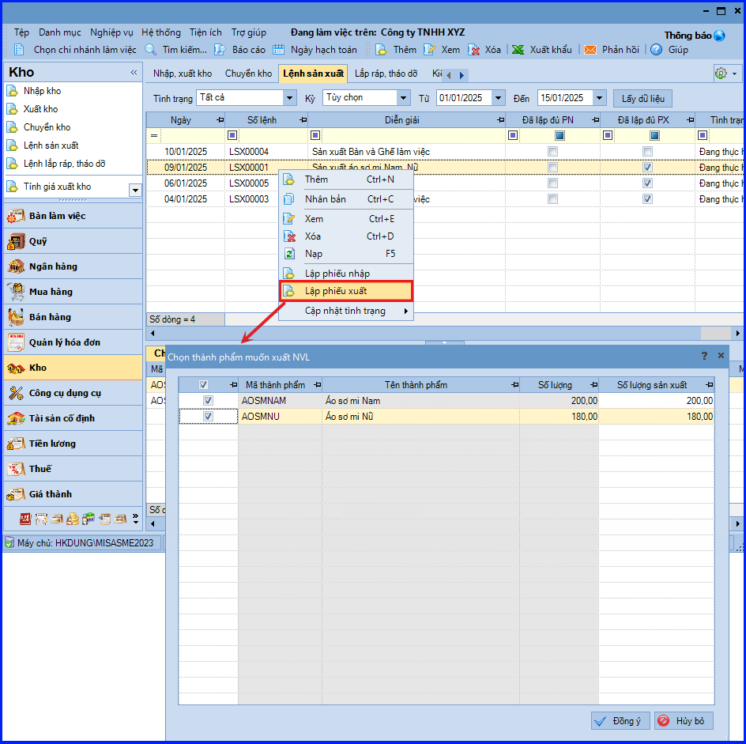
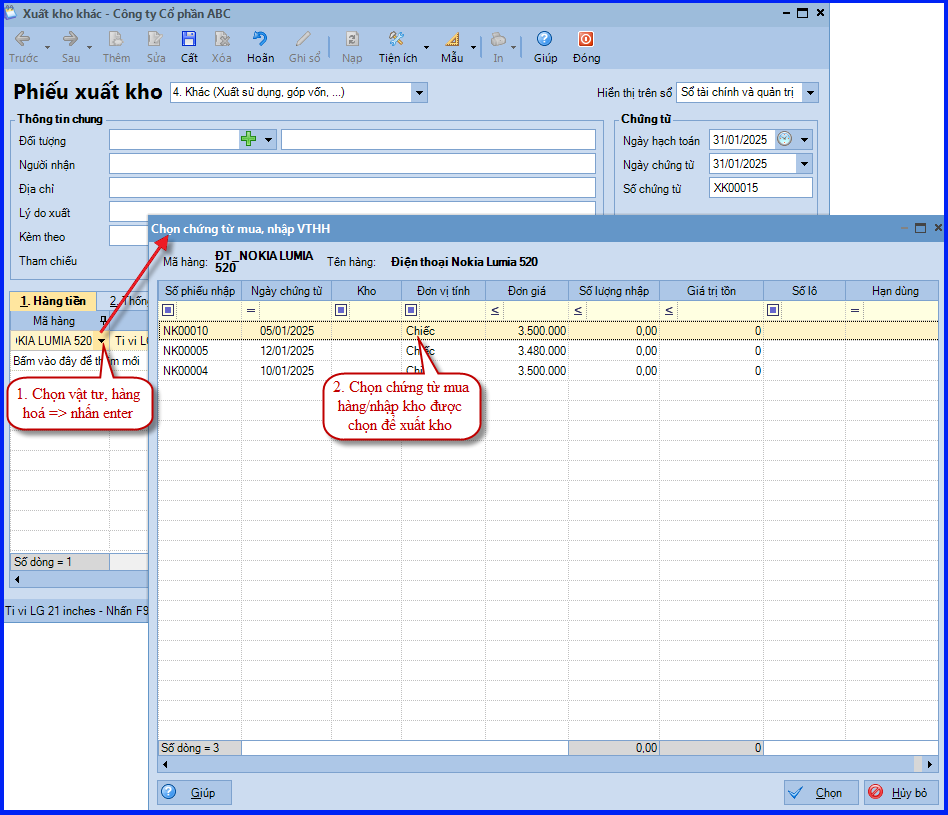

Hướng dẫn cách hạch toán ghi sổ nghiệp vụ xuất kho nguyên vật liệu cho hoạt động sản xuất trên phần mềm Misa
Khi phát sinh nghiệp vụ xuất nguyên vật liệu dùng cho sản xuất, thông thường sẽ phát sinh các hoạt động sau:
- Căn cứ vào kế hoạch sản xuất hoặc đơn hàng của khách hàng trong kỳ, trưởng bộ phận sản xuất sẽ lập lệnh sản xuất cho các phân xưởng.
- Căn cứ vào lệnh sản xuất kế toán kho hoặc người chịu trách nhiệm sẽ đề nghị xuất nguyên vật liệu dùng cho sản xuất.
- Kế toán kho lập Phiếu xuất kho, sau đó chuyển Kế toán trưởng và Giám đốc ký duyệt.
- Căn cứ vào Phiếu xuất kho, Thủ kho xuất kho hàng hoá.
- Thủ kho ghi sổ kho, còn kế toán ghi sổ kế toán kho.
1. Cách định khoản hạch toán khi xuất kho nguyên vật liệu cho hoạt động sản xuất
- Nợ TK 154, 621, 623, 627,…
- Có TK 152 - Nguyên liệu, vật liệu
2. Các bước hạch toán, ghi sổ nghiệp vụ xuất kho nguyên vật liệu cho hoạt động sản xuất trên phần mềm Misa
Bước 1: Lập lệnh sản xuất cho thành phẩm được sản xuất
- Vào phân hệ "Kho" => chọn tab "Lệnh sản xuất" => chọn chức năng "Thêm".
- Chọn thành phẩm cần sản xuất, hệ thống sẽ tự động lấy định mức nguyên vật liệu cần sản xuất đã thiết lập tại danh mục vật tư hàng hóa lên.
- Nhập số lượng thành phẩm cần sản xuất, hệ thống sẽ tự động tính lại định mức nguyên vật liệu cần thiết để sản xuất, sau đó ấn "Cất".
.png)
CHÚ Ý: Trường chưa khai báo thành phẩm sản xuất, thực hiện thêm thành phẩm bằng cách vào menu "Danh mục\Vật tư hàng hóa" => "Vật tư hàng hóa" và ấn "Thêm".
Bước 2: Lập phiếu xuất kho nguyên vật liệu để sản xuất thành phẩm
- Vào phân hệ "Kho" => chọn tab "Nhập, xuất kho" => chọn chức năng "Thêm\Xuất kho".
- Chọn loại phiếu xuất kho là "Sản xuất".
- Chọn thông tin lệnh sản xuất đã lập ở bước 2 bằng 1 trong 2 cách:
+ Ấn vào biểu tượng mũi tên, chọn lệnh sản xuất cần lập phiếu xuất kho.

+ Chọn lệnh sản xuất trên danh sách tìm kiếm:
- Ấn vào biểu tượng kính lúp.
- Thiết lập khoảng thời gian tìm kiếm lệnh sản xuất, sau đó các bạn ấn "Lấy dữ liệu".
- Chọn lệnh sản xuất cần lập phiếu xuất kho, sau đó ấn 'Đồng ý".

- Hệ thống sẽ tự động lấy thông tin định mức nguyên vật liệu cần thiết để sản xuất từ lệnh sản xuất sang phiếu xuất kho.
- Khai báo các thông tin còn lại của chứng từ xuất kho, sau đó ấn "Cất".

- Ấn chọn chức năng "In" trên thanh công cụ, sau đó chọn mẫu phiếu xuất kho cần in.
CHÚ Ý:
- Có thể "Lập phiếu xuất kho ngay trên lệnh sản xuất".
Cụ thể như sau:
- Sau khi cất giữ lệnh sản xuất, chọn chức năng "Lập PX" trên thanh công cụ (hoặc trên tab "Lệnh sản xuất", Click chuột phải và chọn chức năng "Lập phiếu xuất").
- Tích chọn các thành phẩm và nhập lại số lượng thành phẩm cần sản xuất nếu có thay đổi.
- Và ấn "Đồng ý".

- Hệ thống tự động sinh phiếu xuất kho các nguyên vật liệu cần sử dụng để sản xuất cho số lượng thành phẩm đã lập theo lệnh sản xuất.

- Khai báo bổ sung thông tin cho phiếu xuất kho như: người nhận (là nhân viên trong công ty), bộ phận, lý do xuất…
- Sau khi khai báo xong, các bạn ấn "Cất".
Lưu ý: Có thể lập phiếu xuất kho từ lệnh sản xuất bằng cách chọn lệnh sản xuất trên tab "Lệnh sản xuất", sau đó click chuột phải và chọn chức năng "Lập phiếu xuất".

- Trường hợp Thủ kho có tham gia sử dụng phần mềm, sau khi phiếu xuất kho nguyên vật liệu để sản xuất được lập, chương trình sẽ tự động sinh phiếu xuất kho trên tab "Đề nghị nhập, xuất kho của Thủ kho". Thủ kho thực hiện việc ghi sổ phiếu xuất kho vào sổ kho.
- Cách xác định Đơn giá vốn của Vật Tư Hàng Hóa trên phiếu xuất kho như sau:
- Trên các phiếu xuất kho, đơn giá vốn của vật tư hàng hoá xuất kho sẽ được hệ thống tính căn cứ vào phương pháp tính giá xuất kho đã lựa chọn trên menu "Hệ thống" => "Tuỳ chọn" => "Vật tư hàng hoá":
- Với phương pháp Bình quân cuối kỳ, khi phiếu xuất kho được ghi sổ sẽ chưa có thông tin về đơn giá vốn. Đơn giá vốn chỉ được cập nhật khi kế toán thực hiện chức năng "Tính giá xuất kho".
- Với phương pháp Bình quân tức thời hoặc Nhập trước xuất trước, khi phiếu xuất kho được ghi sổ hệ thống sẽ tự động cập nhật giá vốn vào đơn giá xuất của phiếu xuất theo phương pháp đã chọn.
- Với phương pháp Đích danh, khi chọn vật tư hàng hoá để xuất kho, hệ thống sẽ hiển danh sách các các chứng từ mua hàng hoặc nhập kho để lựa chọn. Khi đó đơn giá trên chứng từ được chọn sẽ cập nhật vào đơn giá xuất của phiếu xuất kho.
Lưu ý: Từ SME22 – R22, người dùng có thể chủ động sắp xếp cột "Hạn dùng theo thứ tự tăng dần hoặc giảm dần", thuận tiện cho kế toán chọn xuất trước những Vật Tư Hàng Hóa sắp đến hạn sử dụng.

KẾ TOÁN DIỆU TÂM chúc các bạn làm tốt!
=============================
Nếu bạn muốn thành thạo các kỹ năng làm kế toán trên phần mềm Misa
Thì bạn có thể tham khảo "Khóa Học Thực Hành Kế Toán Trên Phần Mềm Misa" tại Công ty đào tạo Kế Toán Diệu Tâm
Trong khóa học này, bạn sẽ được dạy cách lên sổ sách, lập báo cáo tài chính trên phần mềm Misa
Chi tiết về chương trình đào tạo bạn xem tại đây nhé: Khóa học thực hành kế toán trên Misa
=============================